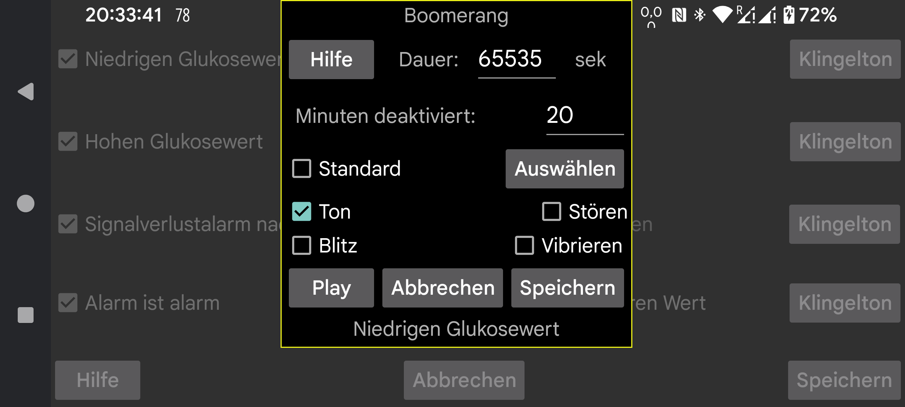

ar be de es fr hi it ja ko nl pl pt ru tr uk uz zh en
Wählen Sie aus, welcher Klingelton für einen Alarm oder eine Benachrichtigung abgespielt werden soll und für wie viele Sekunden.
Minuten deaktiviert: Wenn ein niedriger oder hoher Glukosespiegel anhält, ertönt der Alarm nicht sofort wieder. Sie können festlegen, nach wie vielen Minuten der Alarm erneut generiert werden soll, wenn der Zustand anhält.
Ton: Ton machen.
Standard: Standardton verwenden.
Auswählen: Wählen Sie einen Klingelton aus. Auf einigen Samsung-Telefonen stürzt die vorinstallierte Klingeltonauswahl-App ab, sodass Sie eine andere Klingelton-App installieren müssen, zum Beispiel: https://play.google.com/store/apps/details?id=com.centralparkapps.ringo.ringtones oder https://apkcombo.com/ringtone-picker/de.kumpewo.ringtones
Vibrieren: Vibrieren
Stören: Erzeugt auch Ton, wenn „Nicht stören“ eingeschaltet ist. Wenn Juggluco hierfür nicht die erforderliche Berechtigung hat, werden Sie zu einem Android-Einstellungsbildschirm weitergeleitet, um Juggluco diese Berechtigung zu erteilen. Indem Sie "Nicht stören" einschalten und auf "Play" drücken, können Sie testen, ob die Alarme während "Nicht stören" funktionieren. In der vorherigen Version von Juggluco war „Nicht stören“ nach dem Alarm wieder aktiviert. In der aktuellen Version ist dies nicht der Fall, da dies den unbeabsichtigten Effekt hatte, dass dieser Status nicht automatisch deaktiviert wurde, wenn während einer automatischen „Nicht stören“-Periode ein Alarm ausgelöst wurde.
Blitz: Smartphones mit Taschenlampenlicht haben die Möglichkeit, für die gleiche Anzahl von Sekunden zu blinken. Praktisch für den Fall, dass Klingeltöne nicht erlaubt sind und es keine klaren Richtlinien bezüglich Blitzlicht gibt.